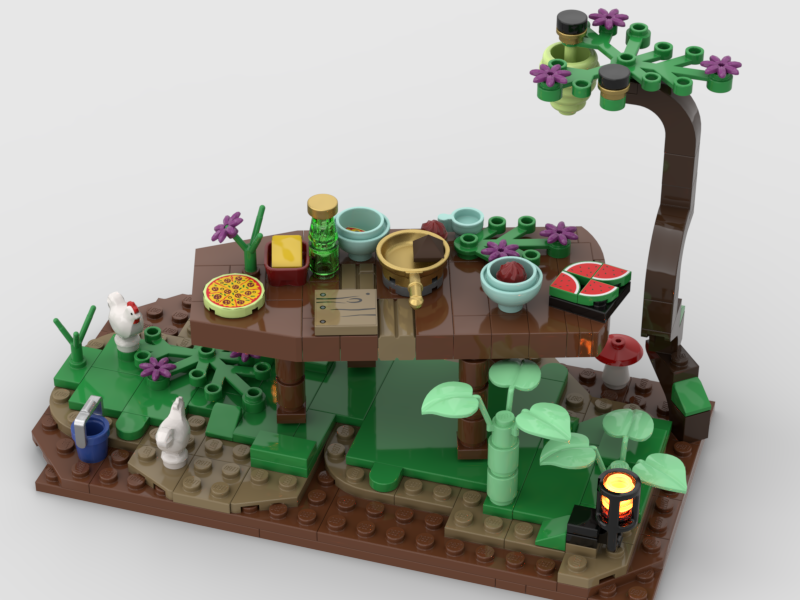
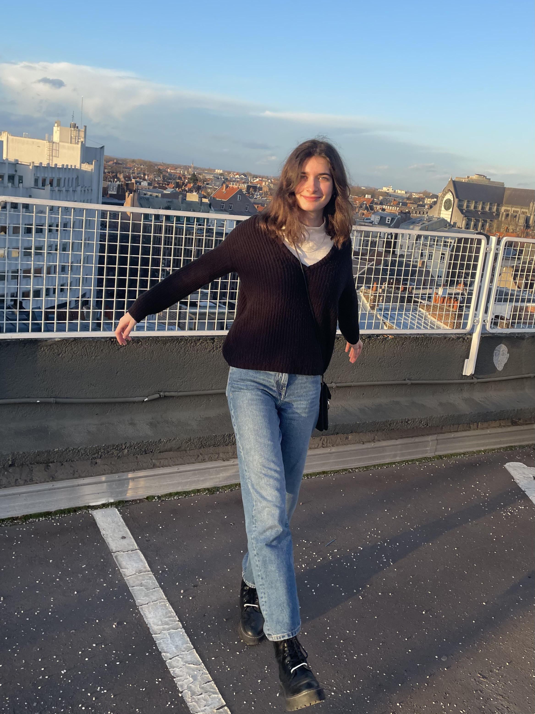

I am a second year student at IESEG school of management, in the Lille campus. This school gives me the opportunity to discover and develop my skills in many fields and not only business! For instance, I am currently learning coding and love that, this is why I have made this little presentation, which I hope will help you know me better. Just below is a link to Ecosia, a website that, like Sleeq, seeks to make an impact on their scale and shapes the future.
Discover Ecosia !I have many hobbies, but here are a few : first, piano since I got one for last christhmas! I enjoy hanging out with my friends and family, and also practice sports such as football, fitness or table tennis. Finally, I have always been interested in discovering new cultures, countries and personnalities.
I love art : movies, paints, music... I also like to write when I am feeling inspired, and fashion. Since I am 6 years old I have been creating lego constructions, here is a recent one.
I would like to do volunteering in the future. I am currently involved in two associations, about art and about gender equality at the BNEM, which is a particularly important topic for me. I am an open-minded person who wants to combine passion with usefulness in my future work, working at my own level on issues such as equality or the inclusion of minorities. One of my projet is also to learn to play piano!
